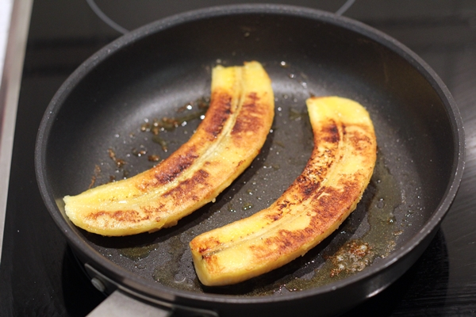
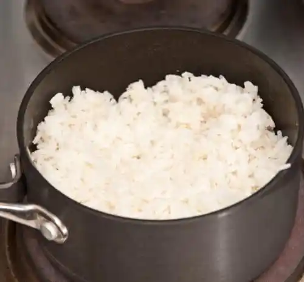
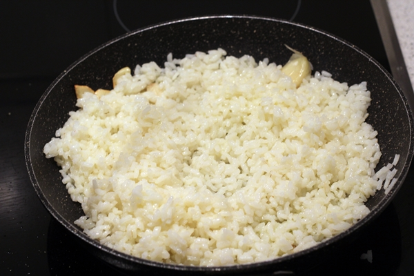
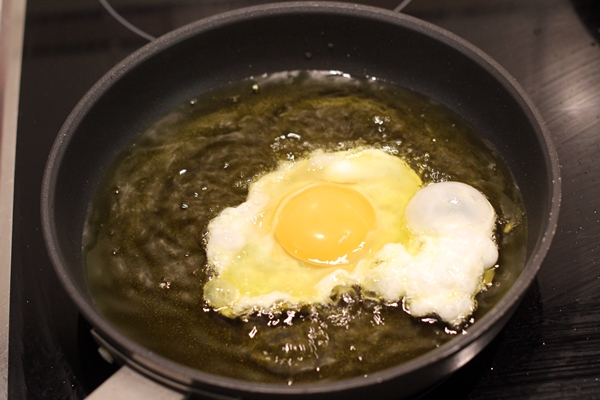

Volver a la pagina principal
Arroz a la cubana
Ingredientes
- 200 gramos de arroz
- 200 ml de salsa de tomate
- 1 platano
- 2 huevo
- 1 diente de ajo
- Laurel
Pasos a seguir
- Lo primero que haremos será pelar el plátano y dorarlo en una sartén con un poco de mantequilla. Retiramos y reservamos. Puede ser plátano o banana, eso ya a gusto de cada uno.

- Por otra parte preparamos el arroz. Cocemos el arroz en agua con sal y una hoja de laurel durante 18 minutos a fuego suave.

- Una vez hecho el arroz, lo que haremos será rehogarlo con un poco de aceite de oliva y un ajo para que coja un poco de sabor.

- Ahora toca freír los huevos en abundante aceite caliente (fritos de verdad, no a la plancha). Freímos los huevos a fuego fuerte si queremos puntilla.

- Emplatamos, con una taza hacemos «la montañita», acompañamos de los dos huevos fritos y el plátano. Cubrimos de tomate frito y a comer con un buen trozo de pan.

Resultado Final